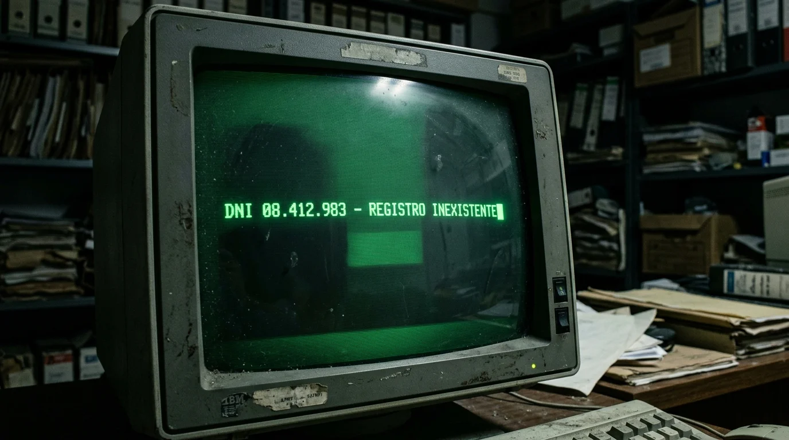
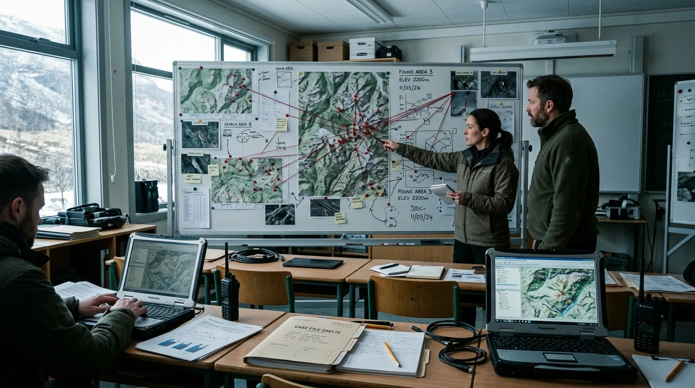
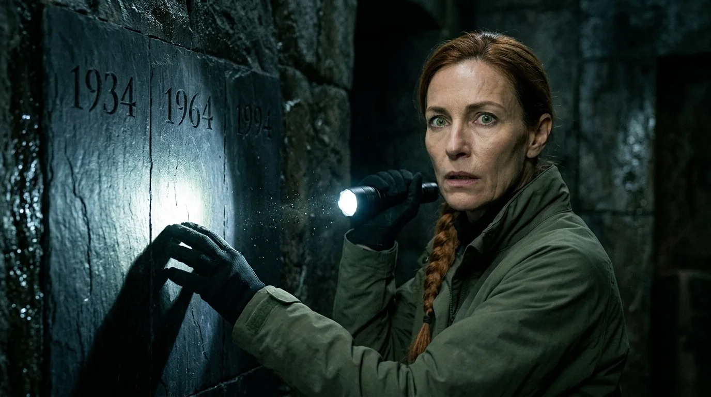
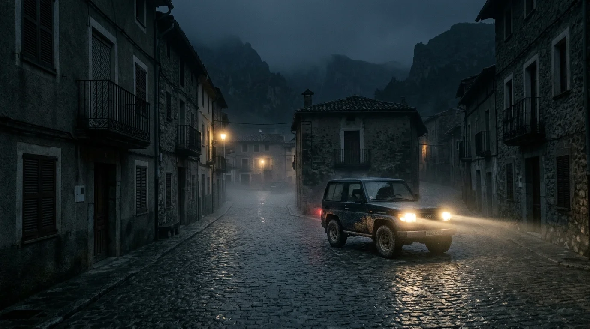
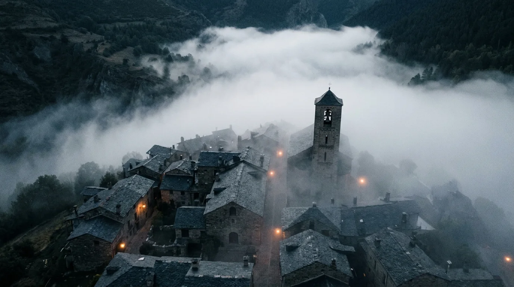

El cursor parpadeaba con una insistencia monótona en la esquina superior de la pantalla del ordenador. Mateo Rivas tecleó por tercera vez el documento nacional de identidad de Julián Beltrán, pulsó la tecla de retorno y contempló el mismo recuadro grisáceo: *Registro inexistente*.
Mateo se frotó los párpados por debajo de las gafas. Afuera, la niebla de media mañana bajaba desde los pinares de la sierra, envolviendo la plaza consistorial de San Jerónimo en una penumbra húmeda y fría. Hacía exactamente nueve días que Julián, un jubilado de setenta y ocho años que cada mañana cruzaba la calzada para comprar una hogaza de pan y saludar a los barrenderos, no daba señales de vida. En su cocina habían quedado las gafas de cerca sobre el hule de flores, la cafetera a medio llenar y la cartilla de la pensión abierta junto al teléfono de rueda. No había cerraduras forzadas ni maletas desaparecidas.
La patrulla de la guardia rural había rastreado las pistas forestales sin encontrar un solo indicio. Pero lo que tenía a Mateo con un nudo seco en la boca no era el extravío del anciano en el monte, sino aquel monitor de tubo en el sótano del ayuntamiento. Mateo mismo había actualizado la ficha de empadronamiento de Julián el mes anterior para tramitar la exención de la tasa de basuras. Recordaba el número exacto del folio, la firma con tinta violeta y el sello ovalado de la secretaría municipal.
Se levantó de la mesa metálica, encendió la bombilla desnuda del archivo y abrió el cajón del año en curso. Buscó la carpeta de la calle del Roble. Pasó los separadores de cartulina con dedos rápidos. El expediente de la casa número cuatro no estaba. En su lugar, el fichero pasaba directamente del dos al seis, como si la vivienda de piedra donde Julián había vivido medio siglo jamás hubiese albergado a nadie.
Mateo subió los peldaños de granito hacia la plaza y caminó hasta el colmado de la esquina. Doña Asunción pesaba judías pintas en una balanza de latón.
—Asunción, ¿ha sabido algo de la familia de don Julián? —preguntó Mateo apoyando las manos en el mostrador.
La tendera se detuvo, con la pala de metal suspendida en el aire, y lo miró con una extrañeza franca y desprovista de malicia.
—¿De quién, hijo?
—De Julián. El de la casa de las buganvillas, el que se sentaba al sol con el transistor.
Asunción frunció el ceño, soltó una risa breve y sacudió la cabeza mientras vertía las judías en una bolsa de papel.
—Te estás quedando ciego con tanto papel viejo, Mateo. Esa casa lleva tapiada desde que yo era mocita. Perteneció a unos tratantes de madera que se marcharon a la capital antes de la riada. Allí no vive nadie.

La llegada del equipo internacional de investigación alteró el sosiego mineral del valle dos semanas más tarde. Para entonces, la desaparición de Julián ya no era un enigma solitario: una chica de dieciséis años, Lucía Méndez, se había esfumado de su dormitorio sin abrir la ventana, y tres días después, la familia Calvo al completo —un matrimonio de ganaderos y sus dos hijos pequeños— había dejado su granja con el ganado mugiendo en los establos y los platos hondos de sopa servidos sobre la mesa.
El Ministerio del Interior había asignado el caso a una comisión mixta de expertos forenses y analistas de desaparecidos coordinada por la doctora Sara Obregón. Instalaron su centro de mando en las aulas cerradas del antiguo colegio comarcal, un edificio de ladrillo rojo rodeado de acacias desnudas.
Mateo acudió al colegio con una caja de cartón repleta de carpetas impresas. Sara Obregón lo recibió en un aula presidida por una gran pizarra magnética donde colgaban mapas topográficos del término municipal y decenas de chinchetas rojas.
—Usted es el responsable del padrón —dijo Sara sin preámbulos, estrechándole la mano con firmeza. Sus ojos verdes mostraban la fatiga de quien lleva días encadenando café solo—. Necesito el censo histórico completo de los últimos cincuenta años. Los archivos digitales que nos ha remitido la delegación provincial vienen mutilados. Hay saltos de numeración absurdos en calles enteras.
—No están mutilados por avería técnica, doctora —respondió Mateo con voz baja, dejando la caja sobre un pupitre escolar—. Se están reescribiendo.
Sara alzó una ceja, incrédula, pero Mateo extrajo un fajo de hojas impresas con fecha del viernes anterior.
—Mire aquí: familia Calvo, cuatro miembros empadronados en el camino de la Solana desde dos mil doce. Este listado lo imprimí yo mismo hace cuatro días con mi impresora matricial. Si entra ahora en la base de datos central de la comunidad autónoma, el camino de la Solana figura como terreno comunal de pastos desde mil novecientos setenta. Y lo peor no son las máquinas. He hablado esta mañana con los tíos de los niños Calvo. Me han dicho que nunca tuvieron sobrinos, que su cuñado murió soltero en un accidente de tractor hace veinte años. La gente no tiene miedo porque la gente no recuerda qué es lo que falta.
Sara lo observó en silencio durante unos segundos interminables. Luego cerró la puerta del aula con pestillo y le hizo una seña a uno de sus analistas informáticos.
—Abre el servidor local sin conexión externa —ordenó Sara—. Compara el padrón escaneado de Mateo con el registro de nacimientos del hospital comarcal.
Tardaron cuarenta minutos. Cuando el analista se apartó del teclado, tenía las manos temblorosas: en el registro digital de partos de mil novecientos noventa y cuatro, las páginas correspondientes a las semanas pares habían desaparecido, sustituidas por números correlativos generados automáticamente que recalculaban el total provincial para que la suma final no delatase ningún hueco.

La investigación sobre el terreno avanzó hacia el norte del término municipal, donde la carretera comarcal quedaba estrangulada por una garganta de rocas calizas y se convertía en una pista forestal abandonada desde los años setenta.
Mateo acompañó al equipo de Sara en dos vehículos todoterreno. Mientras revisaban los límites catastrales, Mateo descubrió en los mapas del instituto geográfico de mil novecientos sesenta y cuatro un topónimo que ya no figuraba en la cartografía moderna: el paraje de la Tejería Vieja.
Se internaron a pie por un sendero cubierto de jaras y helechos podridos. El aire en aquel recodo olía a agua estancada y a cemento mojado. A cincuenta metros de la linde del bosque, medio oculta bajo una densa maraña de zarzales y ramas de abeto caídas, localizaron una losa de hormigón armado con un respiradero metálico carcomido por el óxido.
Forzaron el candado de la trampilla con una cizalla de acero. Un vaho glacial y cargado de un hedor químico penetrante ascendió desde la oscuridad.
Bajaron por una escalera de gato empotrada en el muro de hormigón. Las linternas de Sara y Mateo barrieron una galería subterránea de unos treinta metros de longitud, construida con muros encofrados de grosor militar. No había cables de tensión ni conductos modernos; solo estanterías metálicas de archivo industrial que se prolongaban a lo largo de una sala circular abovedada.
En el centro de la estancia descansaba una mesa de zinc y, sobre la pared frontal, una pizarra de pizarra negra de cuatro metros de ancho cubierta de nombres, fechas y números de documento de identidad grabados con punzón metálico.
Sara se acercó a la pared y alumbró los grabados.
—Dios bendito —susurró la antropóloga, tocando los surcos de la piedra—. Están agrupados en columnas de treinta años. Mil novecientos treinta y cuatro. Mil novecientos sesenta y cuatro. Mil novecientos noventa y cuatro.
Mateo recorrió la lista de mil novecientos noventa y cuatro. Reconoció apellidos del pueblo: familias enteras que en su infancia le sonaban vagamente de conversaciones de taberna entre los viejos, nombres que jamás figuraron en las actas de defunción del cementerio parroquial.
Al pie de la columna de aquel año, casi a ras del suelo de cemento, sus ojos tropezaron con un renglón grabado con trazo profundo:

*Mateo Rivas Carrillo. Nacimiento previsto: 18 de octubre de 1994. Cancelación de asiento: 11 de octubre de 1994.*
Mateo dio un paso atrás, mareado, apoyando la espalda contra una estantería metálica. Su propia respiración le sonaba hueca en los oídos.
—Eso es imposible —dijo Mateo, señalando la pared con mano temblorosa—. Yo nací el dieciocho de octubre de mil novecientos noventa y cuatro. Mi madre dio a luz en el hospital provincial. Tengo treinta y dos años.
Sara alumbró la fecha y luego miró a Mateo. En su rostro de científica curtida no quedaba rastro de escepticismo, solo un pavor glacial.
—La fecha de cancelación es siete días antes de tu nacimiento, Mateo.
Antes de que pudieran examinar el resto de los archivadores, un grito ahogado resonó en la galería de entrada.
Javier, uno de los técnicos de telecomunicaciones del equipo de Sara que se había quedado junto al respiradero exterior montando una antena repetidora, bajó los primeros escalones con los ojos desorbitados.
—Doctora, se ha cortado la señal del satélite en seco —dijo el técnico, sujetándose a la barandilla—. Y los coches... las baterías de los dos todoterreno están muertas. No tienen ni una gota de carga.
Sara subió rápidamente los escalones con Mateo pisándole los talones. Al salir a la superficie, la niebla se había espesado tanto que los árboles circundantes apenas se distinguían como siluetas espectrales a tres metros de distancia.
Javier se detuvo a medio camino entre la trampilla y el primer todoterreno. Miró hacia la espesura del bosque, ladeó la cabeza como si escuchase un silbido inaudible y dio dos pasos hacia los matorrales.

—Javier, no se aleje —advirtió Sara con voz tajante.
El técnico no respondió. Su figura pareció difuminarse durante una fracción de segundo, como si la densidad del aire entre él y los demás hubiese sufrido una vibración térmica. Parpadeó. Cuando Mateo volvió a fijar la vista en el claro de tierra, Javier ya no estaba.
Sara corrió hacia los matorrales alumbrando con su linterna de alta potencia.
—¡Javier! ¡Responda!
No había pisadas en el barro fresco. No había ramas quebradas. Solo el rumor constante de las gotas de lluvia cayendo sobre las hojas de pino.
Mateo regresó junto al vehículo y sacó la radio del equipo de Sara.
—Sara, llame a la base escolar. Avisemos de que tenemos un investigador desaparecido.
Sara se giró hacia él. La linterna temblaba en su mano enguantada. Lo miró con las cejas fruncidas y una confusión profunda y dolorosa en la mirada.
—¿De qué investigador estás hablando, Mateo? Hemos venido solos tú y yo en mi coche.
Mateo sintió cómo el suelo bajo sus botas perdía toda solidez. Corrió hacia el segundo todoterreno, pero el espacio donde había estado aparcado el vehículo de Javier estaba vacío, cubierto de hierba alta y ortigas que parecían llevar meses creciendo allí sin haber sido pisadas por ningún neumático.

Regresaron al pueblo en el todoterreno de Sara, que arrancó al primer intento tras un esfuerzo agónico del motor de arranque.
San Jerónimo estaba sumido en un silencio de tumba. No había niños jugando en la plaza ni ancianos en los bancos. En el aula del colegio, los otros tres analistas del equipo de Sara trabajaban frente a sus pantallas con una calma mecánica. Cuando Sara entró y preguntó por el informe balístico que Javier debía haber procesado aquella mañana, los analistas la miraron con extrañeza:
—Doctora, el equipo lo formamos nosotros cuatro desde que salimos de Madrid. Nadie llamado Javier ha trabajado jamás con nosotros.
Mateo no esperó a que la amnesia terminase de cerrar el círculo. Bajó al sótano del ayuntamiento, encendió su ordenador y descubrió que el módem telefónico no emitía tono de marcación. La línea exterior estaba muerta. Metió en su mochila de cuero su cuaderno de notas manuscritas, las fotocopias del padrón y su cartilla de vacunación infantil.
Recordó el final de la lista en la pared de hormigón del búnker. Había una última columna encabezada por el año en curso: dos mil veintiséis. Al final de la relación de nombres tachados figuraba una última línea:
*Mateo Rivas Carrillo. Segunda notificación: 19 de octubre de 2026. Anotación: Sujeto persistente. Ya ha desaparecido una vez.*
La fecha correspondía a la medianoche de aquel mismo día.
Subió a su piso, preparó una bolsa con ropa de abrigo y las llaves de su coche viejo. El pueblo no era una comunidad aislada por la geografía, sino un vertedero del tiempo: un lugar donde la realidad se replegaba periódicamente sobre sí misma para podar los cabos sueltos de vidas que nunca debieron existir, borrando primero los documentos y después los rostros en la memoria de los vivos.
Cuando cruzó el pasillo hacia la puerta de entrada, el teléfono fijo de la salita comenzó a sonar.
El timbre metálico retumbó en la casa vacía con una fuerza insoportable. Mateo se quedó inmóvil a dos pasos del descansillo. Nadie llamaba a aquel número salvo su madre, fallecida cuatro años atrás.
Avanzó despacio, descolgó el auricular de baquelita negra y se lo llevó a la oreja sin pronunciar palabra.
Al otro lado de la línea no se escuchaban chasquidos de estática ni rumor de centralita. Solo una respiración fatigada, asmática y áspera, la respiración de un anciano que parecía arrastrar el peso de mil inviernos.
—No salgas del pueblo, Mateo —dijo la voz.
Mateo se quedó sin aire en los pulmones. Aquella voz era la suya propia, pero desgastada por cuarenta años de vejez y desolación.
—¿Quién es usted? —logró susurrar Mateo.
—Soy el que cruzó la linde en mil novecientos noventa y cuatro creyendo que podía huir del olvido —respondió la voz al otro lado del hilo telefónico—. Si cruzas el puente del río esta noche, el padrón no se borrará: serás tú quien deje de existir para siempre en todas partes. Y esta vez no quedará nadie en el mundo para recordar que alguna vez respiraste.